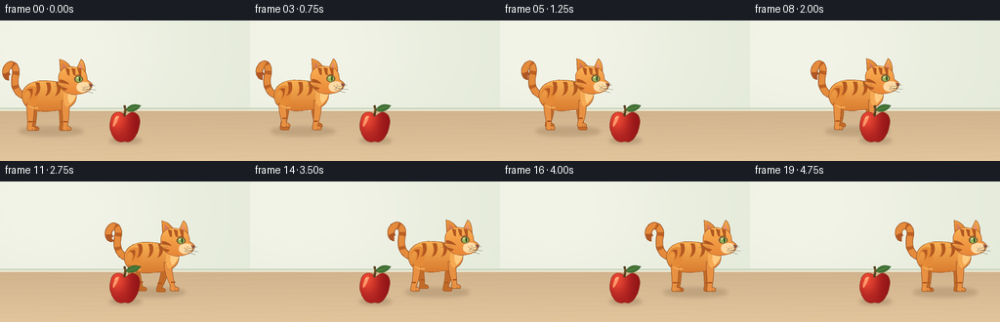
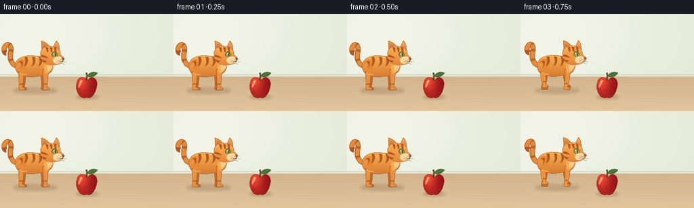

CODING AGENTS AS PIXEL WORLD MODELS
traex/GPT-6.1-Sol · instance_preservation_0006
点击播放 · 原生 RGB 像素
逐轮保存的候选
回放视频、检查图与代码变化。
每份候选均可单独播放。实际图片检查记录在下方工具轨迹中。
候选 01播放与检查图
点击播放 · 原生 RGB 像素


展开代码变化
--- 上一保存版本
+++ 本次保存版本
@@ -0,0 +1,183 @@
+from pathlib import Path
+import json, math
+import numpy as np
+from PIL import Image, ImageDraw, ImageFilter
+import artifact_io
+
+ROOT=Path(__file__).resolve().parent
+SPEC=json.loads((ROOT/'task_spec.json').read_text())
+W,H=SPEC['width'],SPEC['height']
+S=4
+SW,SH=W*S,H*S
+
+def bezier(points, n=22):
+ out=[]; p=None
+ for cmd in points:
+ if cmd[0]=='M': p=np.array(cmd[1:],float); out.append(tuple(p))
+ elif cmd[0]=='L': p=np.array(cmd[1:],float); out.append(tuple(p))
+ elif cmd[0]=='C':
+ a=p.copy(); b=np.array(cmd[1:3]); c=np.array(cmd[3:5]); d=np.array(cmd[5:7])
+ for t in np.linspace(0,1,n+1)[1:]: out.append(tuple((1-t)**3*a+3*(1-t)**2*t*b+3*(1-t)*t*t*c+t**3*d))
+ p=d
+ return out
+
+def line(im, pts, color, width=1):
+ ImageDraw.Draw(im).line([(round(x*S),round(y*S)) for x,y in pts], fill=color,width=max(1,round(width*S)),joint='curve')
+
+def path(im, commands, color, outline=None, width=.65):
+ pts=bezier(commands)
+ ImageDraw.Draw(im).polygon([(round(x*S),round(y*S)) for x,y in pts],fill=color)
+ if outline: line(im,pts+[pts[0]],outline,width)
+
+def ell(im, box, fill, outline=None,width=.6):
+ ImageDraw.Draw(im).ellipse(tuple(round(v*S) for v in box),fill=fill,outline=outline,width=max(1,round(width*S)))
+
+def gradient_shape(im, commands, top, bottom, bounds, outline=None):
+ mask=Image.new('L',(SW,SH));path(mask,commands,255)
+ y0,y1=bounds
+ ys=np.arange(SH)[:,None]/S
+ f=np.clip((ys-y0)/(y1-y0),0,1)[...,None]
+ row=np.array(top)[None,None,:]*(1-f)+np.array(bottom)[None,None,:]*f
+ arr=np.tile(row,(1,SW,1)).astype(np.uint8)
+ im.paste(Image.fromarray(arr),(0,0),mask)
+ if outline:
+ pts=bezier(commands);line(im,pts+[pts[0]],outline,.6)
+
+# Quiet, sunlit tabletop; background stays completely stationary.
+y,x=np.mgrid[0:SH,0:SW].astype(float); x/=S;y/=S
+rng=np.random.default_rng(91)
+wall=np.zeros((SH,SW,3),float)
+wall[:]=[228,234,218]
+light=np.exp(-((x-50)/150)**2-((y-28)/100)**2)
+wall += light[...,None]*np.array([14,10,13])
+wall += rng.normal(0,.23,(SH,SW,1))
+floor=y>=92
+f=(y-92)/52
+for k,(base,delta) in enumerate(zip([209,180,141],[18,17,15])):
+ wall[:,:,k]=np.where(floor,base+delta*f,wall[:,:,k])
+# Subtle horizontal wood variation rather than distracting details.
+grain=(.8*np.sin(y*1.3+x*.024)+.35*np.sin(y*5.2+x*.03))*floor
+wall+=grain[...,None]*np.array([1.1,.8,.55])
+background=Image.fromarray(np.clip(wall,0,255).astype('uint8'))
+line(background,[(0,90),(256,90)],(200,210,188),1.4)
+line(background,[(0,92),(256,92)],(239,233,207),1.0)
+
+# Apple is one persistent, fixed object in the foreground.
+def apple(im):
+ ax,ay=128,109
+ sh=Image.new('RGBA',(SW,SH));ell(sh,(112,120,145,126),(86,56,32,65))
+ sh=sh.filter(ImageFilter.GaussianBlur(2*S));im.paste(sh,(0,0),sh)
+ silhouette=[('M',128,97),('C',122,91,114,94,113,102),('C',110,111,116,123,122,124),('C',125,125,127,123,129,124),('C',136,126,142,115,143,106),('C',145,96,136,91,131,96),('C',130,97,129,98,128,97)]
+ mask=Image.new('L',(SW,SH));path(mask,silhouette,255)
+ yy,xx=np.mgrid[0:SH,0:SW];xx=xx/S; yy=yy/S
+ lit=np.exp(-((xx-120)/10)**2-((yy-100)/15)**2)
+ edge=np.maximum(0,(xx-129)/16)
+ color=np.empty((SH,SW,3))
+ color[:,:,0]=167+67*lit-25*edge
+ color[:,:,1]=30+41*lit-11*edge
+ color[:,:,2]=30+21*lit-8*edge
+ color+=rng.normal(0,.5,(SH,SW,1))
+ im.paste(Image.fromarray(np.clip(color,0,255).astype('uint8')),(0,0),mask)
+ line(im,bezier(silhouette)+[(128,97)],(143,46,30),.45)
+ path(im,[('M',117,102),('C',118,98,120,97,122,98),('C',121,101,118,108,116,109),('C',115,107,116,104,117,102)],(251,147,103))
+ line(im,[(118,101),(119,99),(120,99)],(255,200,146),.9)
+ line(im,bezier([('M',127,98),('C',128,94,129,90,127,87)]),(87,63,32),2.3)
+ line(im,[(127.8,94),(128,89)],(138,105,55),.7)
+ path(im,[('M',129,92),('C',132,85,139,85,144,87),('C',140,93,134,95,129,92)],(65,114,54),(53,93,42),.45)
+ line(im,[(130,92),(140,88)],(141,170,81),.55)
+
+# Hand-drawn, shaded orange tabby, with continuous articulated walking motion.
+def cat(im,cx,cy,phase,moving,t):
+ def C(cmd):
+ return [(p[0],)+tuple(v+(cx if j%2==0 else cy) for j,v in enumerate(p[1:])) for p in cmd]
+ def P(cmd,color,outline=None,width=.6):path(im,C(cmd),color,outline,width)
+ def L(points,color,width=1):line(im,[(cx+a,cy+b) for a,b in points],color,width)
+ def E(box,color,outline=None,width=.6):ell(im,(box[0]+cx,box[1]+cy,box[2]+cx,box[3]+cy),color,outline,width)
+ def G(cmd,top,bottom,bounds,outline=None):gradient_shape(im,C(cmd),top,bottom,(bounds[0]+cy,bounds[1]+cy),outline)
+ dark=(147,73,30); stripe=(178,87,33)
+ # Tail rises behind rump with a smoothly changing curl.
+ sway=2*math.sin(t*1.1)
+ tc=[('M',-23,-12),('C',-34,-15,-35,-25,-33,-34),('C',-31,-43,-38+sway,-48,-42+sway,-41),('C',-45+sway,-37,-42+sway,-31,-40+sway,-32)]
+ tailpts=[(cx+a,cy+b) for a,b in bezier(tc)]
+ line(im,tailpts,dark,7.6);line(im,tailpts,(228,139,60),6.3)
+ # Tail-tip and banding follow its curve.
+ line(im,tailpts[-14:],(176,87,37),6.1)
+ for i in [10,22,32]:
+ if i+3<len(tailpts):line(im,tailpts[i:i+4],(187,97,37),6.4)
+ # Four separate legs, with far legs behind the torso.
+ def leg(base,ph,far=False,fore=False):
+ a=math.sin(ph)*moving
+ lift=max(0,math.cos(ph))*3*moving
+ foot=base+5.8*a
+ hipy=-7 if fore else -4
+ knee=base+2*a
+ col=(194,107,41) if far else (232,145,66)
+ edge=(164,84,31) if far else dark
+ cmd=[('M',base-4,hipy),('C',base-4,4,knee-3,8,foot-3,18-lift),('C',foot-4,21-lift,foot-4,23-lift,foot-1,23-lift),('L',foot+5,23-lift),('C',foot+7,22-lift,foot+6,19-lift,foot+2,19-lift),('C',knee+4,10,base+4,2,base+4,hipy),('L',base-4,hipy)]
+ P(cmd,col,edge,.55)
+ L([(foot-2,14-lift),(foot+2,14-lift)],(173,88,33),1.6)
+ if not far:
+ L([(foot+2,21-lift),(foot+2,22.7-lift)],(165,91,42),.45)
+ L([(foot+4,21-lift),(foot+4,22.7-lift)],(165,91,42),.45)
+ leg(-15,phase+math.pi,True)
+ leg(15,phase,True,True)
+ body=[('M',-26,-8),('C',-29,-21,-18,-29,-3,-28),('C',10,-28,16,-25,21,-25),('C',27,-28,30,-20,29,-12),('C',29,-3,20,3,6,3),('C',-6,5,-23,4,-26,-8)]
+ G(body,(248,177,83),(213,117,44),(-28,7),dark)
+ # Hips and shoulders blend into the body with soft curved markings.
+ leg(-18,phase,False)
+ leg(18,phase+math.pi,False,True)
+ P([('M',-25,-10),('C',-26,-19,-19,-24,-13,-22),('C',-10,-20,-9,-13,-11,-6),('C',-14,0,-20,2,-22,-1),('C',-19,-6,-18,-14,-20,-17),('C',-21,-18,-24,-15,-25,-10)],(229,139,55))
+ for bx in [-10,1,11]:
+ P([('M',bx-3,-26),('C',bx-1,-21,bx-1,-16,bx-4,-12),('C',bx+2,-14,bx+3,-20,bx+1,-26),('L',bx-3,-26)],stripe)
+ P([('M',-22,-19),('C',-17,-18,-16,-13,-19,-9),('C',-16,-11,-15,-17,-16,-20),('L',-22,-19)],stripe)
+ L([(-20,-2),(-15,0),(-10,0)],(246,174,89),1.4)
+ # Neck/chest has a soft pale-orange bib.
+ P([('M',17,-26),('C',17,-16,14,-8,18,-2),('C',21,1,25,-5,27,-12),('L',27,-27)],(245,170,83))
+ P([('M',24,-22),('C',19,-15,20,-7,23,-4),('C',29,-9,31,-17,29,-23)],(255,203,128))
+ # Ears, visible independently above the round head.
+ G([('M',13,-32),('L',12,-50),('C',18,-49,24,-43,25,-37),('L',13,-32)],(237,154,63),(210,112,45),(-50,-30),dark)
+ P([('M',15,-46),('L',16,-35),('L',22,-38)],(210,119,100))
+ G([('M',27,-35),('L',34,-50),('C',38,-47,39,-39,38,-32),('L',27,-35)],(247,174,79),(217,123,49),(-50,-31),dark)
+ P([('M',34,-46),('L',30,-35),('L',36,-35)],(231,142,120))
+ head=[('M',11,-29),('C',10,-40,19,-44,28,-42),('C',37,-41,40,-36,40,-29),('C',42,-27,46,-26,45,-22),('C',44,-18,39,-15,32,-14),('C',22,-12,15,-17,12,-23),('L',9,-25),('L',11,-26)]
+ G(head,(252,179,85),(231,133,54),(-44,-13),dark)
+ # Forehead stripes and tabby cheek markings.
+ for q in [0,6,12]:
+ P([('M',18+q,-41),('L',20+q,-34),('L',22+q,-33),('L',22+q,-40)],stripe)
+ P([('M',12,-29),('C',16,-29,20,-27,22,-24),('L',18,-25),('L',12,-26)],stripe)
+ P([('M',13,-22),('L',20,-20),('L',18,-18),('L',14,-19)],stripe)
+ # Cream muzzle with profile nose, mouth and delicate whiskers.
+ P([('M',30,-24),('C',33,-28,41,-27,44,-24),('C',45,-19,40,-16,34,-16),('C',30,-17,28,-20,30,-24)],(255,218,164))
+ E((27,-33,35.8,-26),(113,77,40))
+ E((28.2,-32.2,34.8,-26.5),(151,181,91))
+ E((32,-32,33.2,-27),(40,56,32))
+ E((29.4,-31.5,30.6,-30.2),(255,251,211))
+ L([(28,-33),(31,-34),(34,-33)],(118,67,31),.8)
+ P([('M',42,-25),('L',46,-24),('L',43.6,-21.5)],(150,81,71),(116,68,46),.5)
+ L([(43.5,-21.5),(43,-19.5),(39.5,-18.7)],(122,78,46),.65)
+ for px,py in [(35,-22),(38,-23),(37,-20)]:E((px-.35,py-.35,px+.35,py+.35),(163,107,62))
+ L([(36,-21),(48,-23)],(106,88,62),.42)
+ L([(36,-19.8),(49,-18.4)],(106,88,62),.42)
+ L([(35,-18.7),(46,-15.2)],(106,88,62),.42)
+ L([(18,-25),(6,-27)],(139,104,58),.35)
+ L([(18,-23),(6,-22)],(139,104,58),.35)
+
+frames=[]
+for i in range(SPEC['frames']):
+ t=i/SPEC['fps']
+ u=np.clip((i-2)/14,0,1)
+ progress=u*u*(3-2*u)
+ cx=49+148*progress
+ speed=1 if 0<u<1 else 0
+ phase=(cx-49)/39*2*math.pi
+ cy=89.5-.75*speed*math.cos(2*phase)
+ im=background.copy()
+ sh=Image.new('RGBA',(SW,SH))
+ ell(sh,(cx-30,109,cx+36,118),(92,65,35,53))
+ ell(sh,(cx-22,111,cx+24,116),(82,55,31,44))
+ sh=sh.filter(ImageFilter.GaussianBlur(2*S));im.paste(sh,(0,0),sh)
+ cat(im,cx,cy,phase,speed,t)
+ apple(im)
+ frames.append(np.asarray(im.resize((W,H),Image.Resampling.LANCZOS).convert('RGB')))
+artifact_io.save(np.stack(frames),ROOT)
+print('Saved',len(frames),'RGB frames',W,H)
可观测工具轨迹
实际执行的命令与返回图片。
命令 1exit 0
/bin/bash -lc "ls -la && cat prompt.txt && printf '\\n---RULES---\\n' && cat GENERATION_RULES.md && printf '\\n---SPEC---\\n' && cat task_spec.json"
命令 2exit 0
/bin/bash -lc "cat artifact_io.py && python - <<'PY'
import PIL,numpy
print('PIL',PIL.__version__)
PY"命令 3exit 0
/bin/bash -lc "cat > generate.py <<'PY'
from pathlib import Path
import json, math
import numpy as np
from PIL import Image, ImageDraw, ImageFilter
import artifact_io
ROOT=Path(__file__).resolve().parent
SPEC=json.loads((ROOT/'task_spec.json').read_text())
W,H=SPEC['width'],SPEC['height']
S=4
SW,SH=W*S,H*S
def bezier(points, n=22):
out=[]; p=None
for cmd in points:
if cmd[0]=='M': p=np.array(cmd[1:],float); out.append(tuple(p))
elif cmd[0]=='L': p=np.array(cmd[1:],float); out.append(tuple(p))
elif cmd[0]=='C':
a=p.copy(); b=np.array(cmd[1:3]); c=np.array(cmd[3:5]); d=np.array(cmd[5:7])
for t in np.linspace(0,1,n+1)[1:]: out.append(tuple((1-t)**3*a+3*(1-t)**2*t*b+3*(1-t)*t*t*c+t**3*d))
p=d
return out
def line(im, pts, color, width=1):
ImageDraw.Draw(im).line([(round(x*S),round(y*S)) for x,y in pts], fill=color,width=max(1,round(width*S)),joint='curve')
def path(im, commands, color, outline=None, width=.65):
pts=bezier(commands)
ImageDraw.Draw(im).polygon([(round(x*S),round(y*S)) for x,y in pts],fill=color)
if outline: line(im,pts+[pts[0]],outline,width)
def ell(im, box, fill, outline=None,width=.6):
ImageDraw.Draw(im).ellipse(tuple(round(v*S) for v in box),fill=fill,outline=outline,width=max(1,round(width*S)))
def gradient_shape(im, commands, top, bottom, bounds, outline=None):
mask=Image.new('L',(SW,SH));path(mask,commands,255)
y0,y1=bounds
ys=np.arange(SH)[:,None]/S
f=np.clip((ys-y0)/(y1-y0),0,1)[...,None]
row=np.array(top)[None,None,:]*(1-f)+np.array(bottom)[None,None,:]*f
arr=np.tile(row,(1,SW,1)).astype(np.uint8)
im.paste(Image.fromarray(arr),(0,0),mask)
if outline:
pts=bezier(commands);line(im,pts+[pts[0]],outline,.6)
# Quiet, sunlit tabletop; background stays completely stationary.
y,x=np.mgrid[0:SH,0:SW].astype(float); x/=S;y/=S
rng=np.random.default_rng(91)
wall=np.zeros((SH,SW,3),float)
wall[:]=[228,234,218]
light=np.exp(-((x-50)/150)**2-((y-28)/100)**2)
wall += light[...,None]*np.array([14,10,13])
wall += rng.normal(0,.23,(SH,SW,1))
floor=y>=92
f=(y-92)/52
for k,(base,delta) in enumerate(zip([209,180,141],[18,17,15])):
wall[:,:,k]=np.where(floor,base+delta*f,wall[:,:,k])
# Subtle horizontal wood variation rather than distracting details.
grain=(.8*np.sin(y*1.3+x*.024)+.35*np.sin(y*5.2+x*.03))*floor
wall+=grain[...,None]*np.array([1.1,.8,.55])
background=Image.fromarray(np.clip(wall,0,255).astype('uint8'))
line(background,[(0,90),(256,90)],(200,210,188),1.4)
line(background,[(0,92),(256,92)],(239,233,207),1.0)
# Apple is one persistent, fixed object in the foreground.
def apple(im):
ax,ay=128,109
sh=Image.new('RGBA',(SW,SH));ell(sh,(112,120,145,126),(86,56,32,65))
sh=sh.filter(ImageFilter.GaussianBlur(2*S));im.paste(sh,(0,0),sh)
silhouette=[('M',128,97),('C',122,91,114,94,113,102),('C',110,111,116,123,122,124),('C',125,125,127,123,129,124),('C',136,126,142,115,143,106),('C',145,96,136,91,131,96),('C',130,97,129,98,128,97)]
mask=Image.new('L',(SW,SH));path(mask,silhouette,255)
yy,xx=np.mgrid[0:SH,0:SW];xx=xx/S; yy=yy/S
lit=np.exp(-((xx-120)/10)**2-((yy-100)/15)**2)
edge=np.maximum(0,(xx-129)/16)
color=np.empty((SH,SW,3))
color[:,:,0]=167+67*lit-25*edge
color[:,:,1]=30+41*lit-11*edge
color[:,:,2]=30+21*lit-8*edge
color+=rng.normal(0,.5,(SH,SW,1))
im.paste(Image.fromarray(np.clip(color,0,255).astype('uint8')),(0,0),mask)
line(im,bezier(silhouette)+[(128,97)],(143,46,30),.45)
path(im,[('M',117,102),('C',118,98,120,97,122,98),('C',121,101,118,108,116,109),('C',115,107,116,104,117,102)],(251,147,103))
line(im,[(118,101),(119,99),(120,99)],(255,200,146),.9)
line(im,bezier([('M',127,98),('C',128,94,129,90,127,87)]),(87,63,32),2.3)
line(im,[(127.8,94),(128,89)],(138,105,55),.7)
path(im,[('M',129,92),('C',132,85,139,85,144,87),('C',140,93,134,95,129,92)],(65,114,54),(53,93,42),.45)
line(im,[(130,92),(140,88)],(141,170,81),.55)
# Hand-drawn, shaded orange tabby, with continuous articulated walking motion.
def cat(im,cx,cy,phase,moving,t):
def C(cmd):
return [(p[0],)+tuple(v+(cx if j%2==0 else cy) for j,v in enumerate(p[1:])) for p in cmd]
def P(cmd,color,outline=None,width=.6):path(im,C(cmd),color,outline,width)
def L(points,color,width=1):line(im,[(cx+a,cy+b) for a,b in points],color,width)
def E(box,color,outline=None,width=.6):ell(im,(box[0]+cx,box[1]+cy,box[2]+cx,box[3]+cy),color,outline,width)
def G(cmd,top,bottom,bounds,outline=None):gradient_shape(im,C(cmd),top,bottom,(bounds[0]+cy,bounds[1]+cy),outline)
dark=(147,73,30); stripe=(178,87,33)
# Tail rises behind rump with a smoothly changing curl.
sway=2*math.sin(t*1.1)
tc=[('M',-23,-12),('C',-34,-15,-35,-25,-33,-34),('C',-31,-43,-38+sway,-48,-42+sway,-41),('C',-45+sway,-37,-42+sway,-31,-40+sway,-32)]
tailpts=[(cx+a,cy+b) for a,b in bezier(tc)]
line(im,tailpts,dark,7.6);line(im,tailpts,(228,139,60),6.3)
# Tail-tip and banding follow its curve.
line(im,tailpts[-14:],(176,87,37),6.1)
for i in [10,22,32]:
if i+3<len(tailpts):line(im,tailpts[i:i+4],(187,97,37),6.4)
# Four separate legs, with far legs behind the torso.
def leg(base,ph,far=False,fore=False):
a=math.sin(ph)*moving
lift=max(0,math.cos(ph))*3*moving
foot=base+5.8*a
hipy=-7 if fore else -4
knee=base+2*a
col=(194,107,41) if far else (232,145,66)
edge=(164,84,31) if far else dark
cmd=[('M',base-4,hipy),('C',base-4,4,knee-3,8,foot-3,18-lift),('C',foot-4,21-lift,foot-4,23-lift,foot-1,23-lift),('L',foot+5,23-lift),('C',foot+7,22-lift,foot+6,19-lift,foot+2,19-lift),('C',knee+4,10,base+4,2,base+4,hipy),('L',base-4,hipy)]
P(cmd,col,edge,.55)
L([(foot-2,14-lift),(foot+2,14-lift)],(173,88,33),1.6)
if not far:
L([(foot+2,21-lift),(foot+2,22.7-lift)],(165,91,42),.45)
L([(foot+4,21-lift),(foot+4,22.7-lift)],(165,91,42),.45)
leg(-15,phase+math.pi,True)
leg(15,phase,True,True)
body=[('M',-26,-8),('C',-29,-21,-18,-29,-3,-28),('C',10,-28,16,-25,21,-25),('C',27,-28,30,-20,29,-12),('C',29,-3,20,3,6,3),('C',-6,5,-23,4,-26,-8)]
G(body,(248,177,83),(213,117,44),(-28,7),dark)
# Hips and shoulders blend into the body with soft curved markings.
leg(-18,phase,False)
leg(18,phase+math.pi,False,True)
P([('M',-25,-10),('C',-26,-19,-19,-24,-13,-22),('C',-10,-20,-9,-13,-11,-6),('C',-14,0,-20,2,-22,-1),('C',-19,-6,-18,-14,-20,-17),('C',-21,-18,-24,-15,-25,-10)],(229,139,55))
for bx in [-10,1,11]:
P([('M',bx-3,-26),('C',bx-1,-21,bx-1,-16,bx-4,-12),('C',bx+2,-14,bx+3,-20,bx+1,-26),('L',bx-3,-26)],stripe)
P([('M',-22,-19),('C',-17,-18,-16,-13,-19,-9),('C',-16,-11,-15,-17,-16,-20),('L',-22,-19)],stripe)
L([(-20,-2),(-15,0),(-10,0)],(246,174,89),1.4)
# Neck/chest has a soft pale-orange bib.
P([('M',17,-26),('C',17,-16,14,-8,18,-2),('C',21,1,25,-5,27,-12),('L',27,-27)],(245,170,83))
P([('M',24,-22),('C',19,-15,20,-7,23,-4),('C',29,-9,31,-17,29,-23)],(255,203,128))
# Ears, visible independently above the round head.
G([('M',13,-32),('L',12,-50),('C',18,-49,24,-43,25,-37),('L',13,-32)],(237,154,63),(210,112,45),(-50,-30),dark)
P([('M',15,-46),('L',16,-35),('L',22,-38)],(210,119,100))
G([('M',27,-35),('L',34,-50),('C',38,-47,39,-39,38,-32),('L',27,-35)],(247,174,79),(217,123,49),(-50,-31),dark)
P([('M',34,-46),('L',30,-35),('L',36,-35)],(231,142,120))
head=[('M',11,-29),('C',10,-40,19,-44,28,-42),('C',37,-41,40,-36,40,-29),('C',42,-27,46,-26,45,-22),('C',44,-18,39,-15,32,-14),('C',22,-12,15,-17,12,-23),('L',9,-25),('L',11,-26)]
G(head,(252,179,85),(231,133,54),(-44,-13),dark)
# Forehead stripes and tabby cheek markings.
for q in [0,6,12]:
P([('M',18+q,-41),('L',20+q,-34),('L',22+q,-33),('L',22+q,-40)],stripe)
P([('M',12,-29),('C',16,-29,20,-27,22,-24),('L',18,-25),('L',12,-26)],stripe)
P([('M',13,-22),('L',20,-20),('L',18,-18),('L',14,-19)],stripe)
# Cream muzzle with profile nose, mouth and delicate whiskers.
P([('M',30,-24),('C',33,-28,41,-27,44,-24),('C',45,-19,40,-16,34,-16),('C',30,-17,28,-20,30,-24)],(255,218,164))
E((27,-33,35.8,-26),(113,77,40))
E((28.2,-32.2,34.8,-26.5),(151,181,91))
E((32,-32,33.2,-27),(40,56,32))
E((29.4,-31.5,30.6,-30.2),(255,251,211))
L([(28,-33),(31,-34),(34,-33)],(118,67,31),.8)
P([('M',42,-25),('L',46,-24),('L',43.6,-21.5)],(150,81,71),(116,68,46),.5)
L([(43.5,-21.5),(43,-19.5),(39.5,-18.7)],(122,78,46),.65)
for px,py in [(35,-22),(38,-23),(37,-20)]:E((px-.35,py-.35,px+.35,py+.35),(163,107,62))
L([(36,-21),(48,-23)],(106,88,62),.42)
L([(36,-19.8),(49,-18.4)],(106,88,62),.42)
L([(35,-18.7),(46,-15.2)],(106,88,62),.42)
L([(18,-25),(6,-27)],(139,104,58),.35)
L([(18,-23),(6,-22)],(139,104,58),.35)
frames=[]
for i in range(SPEC['frames']):
t=i/SPEC['fps']
u=np.clip((i-2)/14,0,1)
progress=u*u*(3-2*u)
cx=49+148*progress
speed=1 if 0<u<1 else 0
phase=(cx-49)/39*2*math.pi
cy=89.5-.75*speed*math.cos(2*phase)
im=background.copy()
sh=Image.new('RGBA',(SW,SH))
ell(sh,(cx-30,109,cx+36,118),(92,65,35,53))
ell(sh,(cx-22,111,cx+24,116),(82,55,31,44))
sh=sh.filter(ImageFilter.GaussianBlur(2*S));im.paste(sh,(0,0),sh)
cat(im,cx,cy,phase,speed,t)
apple(im)
frames.append(np.asarray(im.resize((W,H),Image.Resampling.LANCZOS).convert('RGB')))
artifact_io.save(np.stack(frames),ROOT)
print('Saved',len(frames),'RGB frames',W,H)
PY
python generate.py"命令 4exit 0
/bin/bash -lc "command -v ffmpeg || true; python - <<'PY'
from pathlib import Path
import numpy as np
p=Path('.')
a=np.load(p/'pixels.npz')['pixels']
assert a.shape==(144,256,20)
assert len(list((p/'frames').glob('*.png')))==20
print('Verified pixels.npz:',a.shape,'; 20 PNG frames; player:',(p/'index.html').exists())
PY"保存候选 1 份；完成命令 4 次；可验证图片返回 0 张。原始 API 响应与完整日志保留在本地。